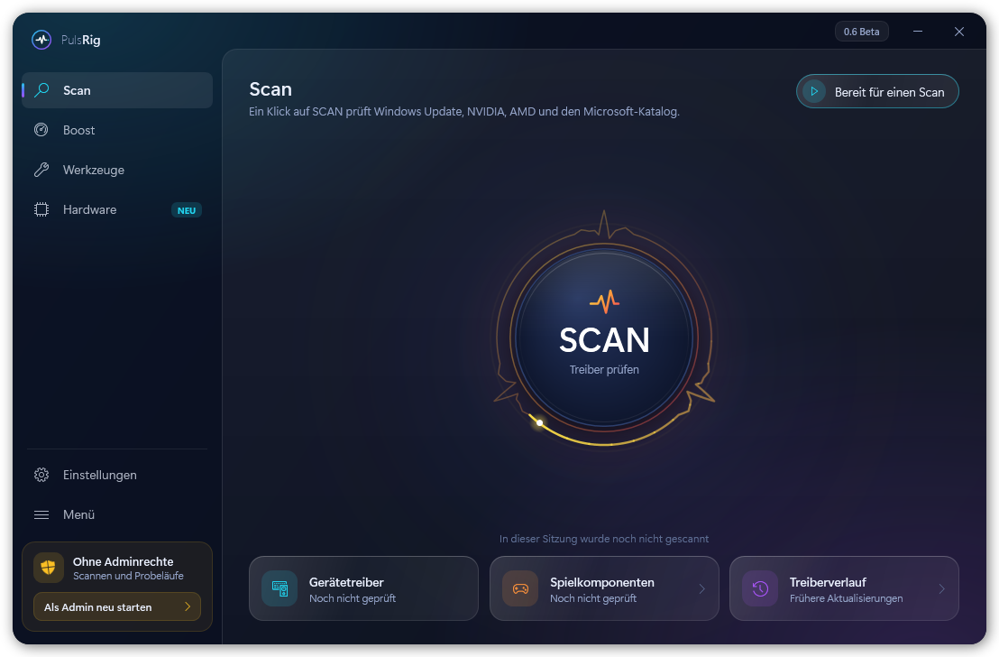
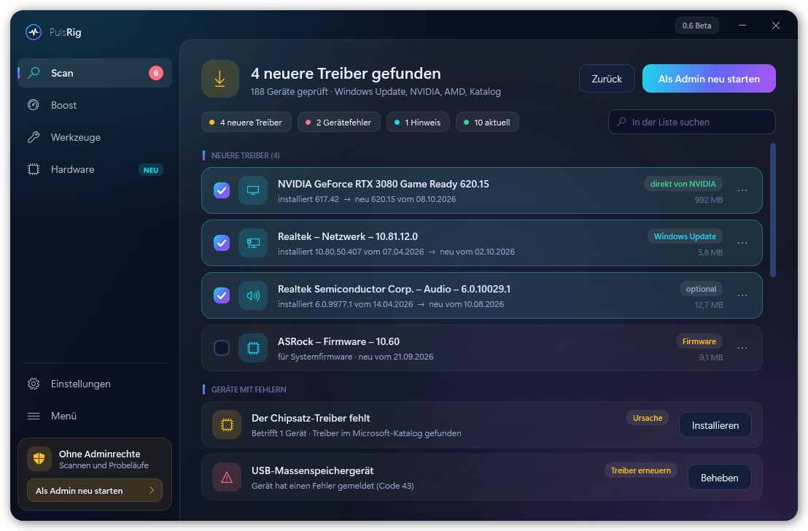
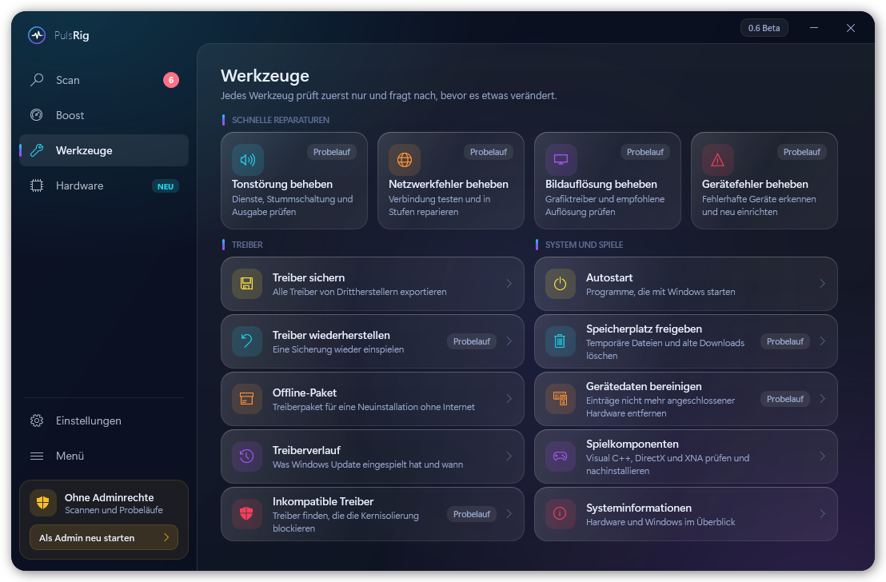
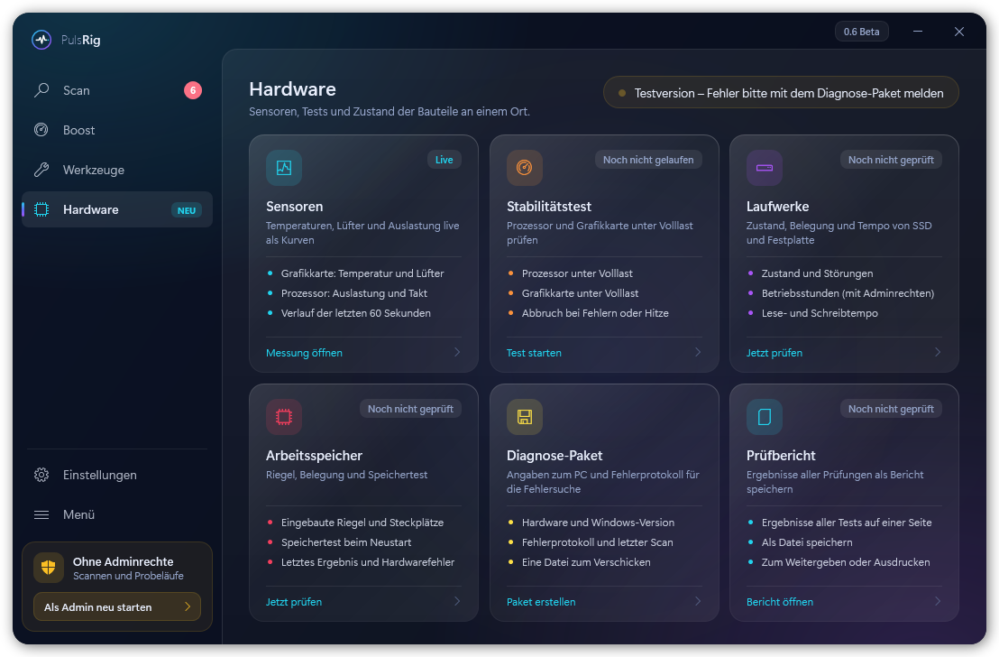

Treiber, Boost und Hardware-Check in einem Programm Drivers, boost and hardware check in one app
PulsRig findet neuere Treiber, schafft vor dem Spielen Platz und prüft, ob Laufwerke, Arbeitsspeicher und Grafikkarte in Ordnung sind. Jeder Schritt erklärt sich, nichts passiert ohne Rückfrage. PulsRig finds newer drivers, frees up resources before you play and checks whether drives, memory and graphics card are healthy. Every step explains itself, nothing happens without asking.

Vier Bereiche, ein FensterFour areas, one window
Was PulsRig ändern will, zeigt es vorher an. Werkzeuge laufen zuerst als Probelauf, vor Treibern legt es einen Wiederherstellungspunkt an. PulsRig shows what it wants to change before it does it. Tools start as a dry run, and before drivers it creates a restore point.
Scan
Neuere Treiber für alle Geräte.
Newer drivers for every device.
- Windows Update, NVIDIA, AMD und der Microsoft-Katalog
- Geräte mit Fehlern auf einen Blick
- Live-Werte und Änderungen auf der Startseite
- Windows Update, NVIDIA, AMD and the Microsoft Catalog
- Devices with errors at a glance
- Live values and recent changes on the start page
Boost
Mehr Luft vor dem Spielen.
More headroom before you play.
- Energieplan, Spielmodus, entbehrliche Dienste
- Auf Wunsch automatisch beim Spielstart
- Ein Klick stellt alles zurück
- Power plan, game mode, non-essential services
- Automatically when a game starts, if you like
- One click restores everything
WerkzeugeTools
Reparaturen ohne Suchen in Windows.
Fixes without digging through Windows.
- Ton, Netzwerk, Bildauflösung, Gerätefehler
- Treiber sichern, Autostart, Standby-Detektiv
- Ein Suchfeld findet jedes Werkzeug
- Sound, network, display resolution, device errors
- Driver backup, startup apps, sleep detective
- A search box finds every tool
Hardware
Prüfen, ob der PC gesund ist.
Check whether the PC is healthy.
- Stabilitätstest, Laufwerke, Arbeitsspeicher
- Abstürze verstehen, Alter des BIOS
- Jede Karte zeigt ihr Ergebnis als Bild
- Stability test, drives, memory
- Understand crashes, BIOS age
- Every card shows its result as a picture
Helfer neben der UhrHelper in the tray
Sieht einmal pro Woche nach neuen Treibern und meldet sich nur, wenn es etwas gibt.
Checks for new drivers once a week and only speaks up when there is something.
Warnt rechtzeitigWarns early
Meldet ein Laufwerk Störungen oder wird langsamer, steht es auf der Startseite.
If a drive reports faults or gets slower, the start page says so.
Updates per KnopfdruckOne-click updates
Neue Fassungen lädt PulsRig selbst und prüft vorher Größe und Prüfsumme.
PulsRig downloads new versions itself and checks size and checksum first.
So sieht es ausWhat it looks like



Die Bilder zeigen Beispieldaten. Ein Klick vergrößert sie.The screenshots show sample data and are in German. Click to enlarge.
In einer Minute startklarReady in a minute
Setup ladenDownload the setup
Über den Knopf oben. Die Datei ist rund 2 MB groß.
Use the button above. The file is about 2 MB.
Warnung bestätigenConfirm the warning
PulsRig ist nicht signiert, deshalb warnt Windows. Auf Weitere Informationen und dann Trotzdem ausführen klicken.
PulsRig is not signed, so Windows warns you. Click More info and then Run anyway.
LoslegenGet started
PulsRig starten und auf SCAN klicken. Die Sprache lässt sich unter Einstellungen auf Englisch stellen.
Start PulsRig, switch the language to English under Settings → General, and click SCAN.
Gut zu wissenGood to know
Was kostet PulsRig?How much does PulsRig cost?
Nichts. Es gibt keine Werbung, kein Konto und keine Bezahlversion.
Nothing. There are no ads, no account and no paid version.
Schickt PulsRig Daten weg?Does PulsRig send any data?
Nein. Es fragt nur Windows Update, NVIDIA, AMD und den Microsoft-Katalog nach Treibern und sieht hier nach neuen Fassungen. Das Diagnose-Paket bleibt auf dem PC, bis du es selbst verschickst.
No. It only asks Windows Update, NVIDIA, AMD and the Microsoft Catalog for drivers and checks this site for new versions. The diagnostics package stays on your PC until you send it yourself.
Kann dabei etwas kaputtgehen?Can anything break?
Vor Treiberinstallationen legt PulsRig einen Wiederherstellungspunkt an und sichert die bisherigen Treiber. Werkzeuge prüfen zuerst und fragen, bevor sie etwas ändern.
Before installing drivers PulsRig creates a restore point and backs up the current drivers. Tools check first and ask before they change anything.
Braucht es Adminrechte?Does it need admin rights?
Zum Scannen nicht. Zum Installieren von Treibern, für den Boost und für manche Werkzeuge schon. PulsRig startet sich dafür auf Wunsch neu.
Not for scanning. Installing drivers, the boost and some tools do. PulsRig restarts itself with admin rights when you ask it to.
Wie bekomme ich neue Fassungen?How do I get new versions?
PulsRig zeigt oben rechts an, wenn es eine neuere gibt. Ein Klick lädt und installiert sie, die Einstellungen bleiben erhalten.
PulsRig shows a note in the top right when a newer one exists. One click downloads and installs it, your settings are kept.
Etwas klappt nicht. Was tun?Something doesn't work. What now?
Unter Hardware → Bericht & Diagnose eine ZIP-Datei erstellen und mit ein paar Worten zum Fehler an pulsrig.hilfe@gmail.com schicken. Der Knopf „Per E-Mail schicken“ bereitet die Mail vor. Das Paket enthält keine Seriennummern, keinen Benutzer- und keinen PC-Namen.
Create a ZIP file under Hardware → Report & diagnostics and send it with a few words about the problem to pulsrig.hilfe@gmail.com. The “Send by email” button prepares the email. The package contains no serial numbers, no user name and no PC name.
Bereit für einen Scan?Ready for a scan?
Kostenlos für Windows 10 und 11, 64 BitFree for Windows 10 and 11, 64-bit
PulsRig herunterladenDownload PulsRig